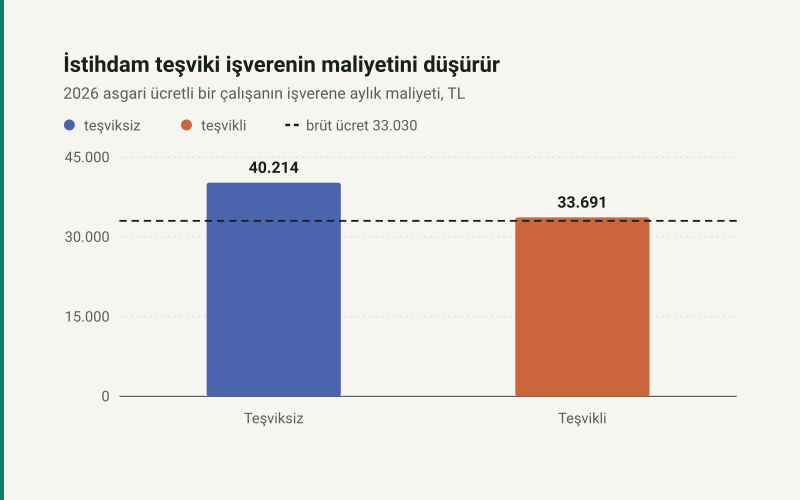

Kısa cevap
Henüz kanun değil. 2/4042 esas numaralı teklif 12 Kasım 2026'te TBMM'ye geldi; 15 maddenin çoğu enerjiyle ilgili. SGK'yı ilgilendiren üç madde var. Aşağıdaki hesaplar teklifin metnine göre; Genel Kurul'da değişebilir.
Kadın ve genç istihdamı teşviki 31 Aralık 2028'e uzuyor. İşverenin sigorta primi hissesini İşsizlik Sigortası Fonu ödüyor. 2026 asgari ücretinde bu ayda 6.523,43 TL; asgari ücretli bir çalışanın işverene maliyetini %16,2 düşürüyor. Mesleki belgeli bir kadın ya da genç İŞKUR'dan işe alınırsa destek 54 ay sürüyor.
2017 öncesi GSS borcu siliniyor. Kapsam: başka yerden sağlık güvencesi olmadığı için prim borcu yazılan vatandaşlar (5510 m.60/1-g). Borcun aslı, gecikme cezası ve zammı tahsil edilmiyor; ama ödenmiş olan geri verilmiyor. Açıklanan rakamla kişi başı ortalama 2.558,18 TL; bu bugünkü GSS priminin 1,3 ayı.
Teklifte ne var?
Teklifin adı yenilenebilir enerjiyle başlıyor; maddelerin çoğu rüzgâr ve güneş kapasitesi, doğal gaz ve kurumlar vergisiyle ilgili. Sosyal güvenliği ilgilendiren üç madde var:
| Madde | Ne değişiyor | Yürürlük |
|---|---|---|
| Madde 3 — 4447 geçici 10 | İstihdam teşvikinin süresi 31 Aralık 2025 yerine 31 Aralık 2028; Cumhurbaşkanı 31 Aralık 2029'e kadar uzatabilir | Yayım tarihi |
| Madde 10 — 5510 geçici 114 | 1 Ocak 2017 öncesi 60/1-g GSS borcunun tamamının tahsilinden vazgeçilir; ödenen iade edilmez | Yayım tarihi |
| Madde 2 — 3308 geçici 12 | Çırak ve stajyer ücretine Devlet katkısını uzatma yetkisi her defasında bir eğitim yılı olmak üzere 15 eğitim yılına çıkar | 14 Eylül 2026'ten geçerli |
Teklif 12 Kasım 2026 itibarıyla komisyon aşamasında. Kanunlaşması için Genel Kurul'da kabul edilmesi ve Resmî Gazete'de yayımlanması gerekiyor.
İstihdam teşviki işverene ne kazandırır?
4447 sayılı Kanun'un geçici 10. maddesi 2011'den beri var; teklif yalnız süresini uzatıyor. Kural şu: işe alınan kişi önceki altı ayda sigortalı olmamalı ve işyerinin bir önceki yıl ortalamasına ek istihdam sağlamalı. O zaman işverenin sigorta primi hissesini fon öder. Önce herkese uygulanan genel indirim (5510 m.81/ı; 2026'da imalat dışında 2,0, imalatta 5,0 puan) düşülür, teşvik kalan işveren hissesini karşılar. İşsizlik sigortası işveren payı (%2,0) kapsam dışında.
| İmalat dışı | İmalat | |
|---|---|---|
| İşverenin sigorta primi oranı (indirim sonrası) | %19,75 | %16,75 |
| Fonun ödediği teşvik | 6.523,43 TL | 5.532,53 TL |
| İşverene toplam maliyet, teşviksiz | 40.214,03 TL | 39.223,13 TL |
| İşverene toplam maliyet, teşvikli | 33.690,60 TL | 33.690,60 TL |
| Maliyetteki düşüş | %16,2 | %14,1 |
Teşvik prime esas kazanç üzerinden hesaplanır: asgari ücretin iki katı ödenen birinde tutar da iki katına çıkar, oran değişmez. Fondan karşılanan tutar gelir ve kurumlar vergisinde gider yazılamaz.
Kaç ay sürer?
Süre kişiye göre değişiyor. Kadınlar (18 yaş üstü) ile 18–29 yaş erkekler en uzun süreyi alıyor; belge sahibi olmak süreyi uzatıyor. Bu iki grup İŞKUR'a kayıtlı işsizler arasından alınırsa 6 ay daha ekleniyor. Toplamlar 2026 tutarı sabit tutularak hesaplandı; asgari ücret arttıkça gerçek tutar da büyür.
| Kim | Süre | Toplam | İŞKUR kayıtlıysa |
|---|---|---|---|
| 18 yaş üstü kadın ya da 18–29 yaş erkek, mesleki yeterlik belgeli | 48 ay | 313.124 TL | 54 ay, 352.265 TL |
| 18 yaş üstü kadın ya da 18–29 yaş erkek, mesleki/teknik eğitim ya da İŞKUR kursu bitirmiş | 36 ay | 234.843 TL | 42 ay, 273.984 TL |
| 18 yaş üstü kadın ya da 18–29 yaş erkek, belgesiz | 24 ay | 156.562 TL | 30 ay, 195.703 TL |
| 29 yaş üstü erkek, belgeli | 24 ay | 156.562 TL | 30 ay, 195.703 TL |
| Çalışırken belge alan 4/a sigortalı | 12 ay | 78.281 TL | — |
| Yukarıdakilere girmeyen, İŞKUR kayıtlı işsiz | 6 ay | 39.141 TL | — |
Destekten aynı sigortalı için bir kez yararlanılır. Süre dolmadan işten ayrılan kişi için kalan süre başka işverene geçmez. Kamu ihalesiyle yürüyen işyerleri ve kamu kurumları kapsam dışında. Kendi bordronuzun işverene maliyetini işveren maliyeti hesaplama aracında görebilirsiniz.
2017 öncesi GSS borcu: kimin borcu, neden 2017?
5510 m.60/1-(g), başka hiçbir kapsamda sağlık güvencesi olmayan vatandaşı genel sağlık sigortalısı sayar. Bu kişiler primi kendileri öder; aile içi geliri asgari ücretin üçte birinin altındaysa prim devletçe ödenir. Kanun bu kişiler için resen tescil öngördü; gelir testine başvurmayanlar için prim tahakkuk etti (5510 geçici m.53 bu durumdakilere 2014'te bir başvuru süresi tanımıştı).
Sınır tarih rastgele değil. 23 Şubat 2017 tarihli 6824 sayılı Kanun, bu kişilerin prim matrahını prime esas kazanç alt sınırına bağladı; teklif bu düzenlemeden önceki döneme ait borcu kapatıyor. Gerekçe, daha önceki yapılandırma kanunlarından yararlanamayan ya da yararlanıp ödeyemeyenlerin borç yükünü hafifletmek ve sağlık hizmetine erişimi kolaylaştırmak olarak yazılmış.
| Tutar | |
|---|---|
| Kapsamdaki kişi (açıklama) | 2.199.869 |
| Toplam borç (açıklama) | 5.627.666.000 TL |
| Kişi başı ortalama | 2.558,18 TL |
| 2026'da 60/g GSS primi (asgari ücretin %6,0'sı) | 1.981,80 TL/ay |
| Ortalama borç kaç aylık prime denk | 1,3 ay |
Kişi sayısı ve tutar teklif metninde değil, teklif sahiplerinin açıklamasında. Ortalama, borçların çoğunun küçük olduğunu söylemez: dağılım yayımlanmadığı için kaç kişinin borcunun ortalamanın çok üstünde olduğu bilinmiyor. Ödemiş olan geri alamıyor; bu yüzden düzenleme borcunu ödeyenle ödemeyen arasında fark yaratıyor.
Stajyer ücretine Devlet katkısı
3308 sayılı Kanun'un geçici 12. maddesine göre işletmelerde mesleki eğitim gören, staj ya da tamamlayıcı eğitim yapan öğrencilere ödenen ücretin bir bölümünü Devlet karşılıyor. Teklif, bu uygulamayı uzatma yetkisini her defasında bir eğitim yılı olmak üzere 15 eğitim yılına çıkarıyor ve usul belirleme yetkisini Cumhurbaşkanına veriyor. Madde 14 Eylül 2026'ten geçerli olacak; katkının tutarını değiştirmiyor.
Varsayımlar ve sınırlar
- Metin tekliftir; Genel Kurul'da madde eklenebilir, çıkarılabilir ya da değiştirilebilir.
- Teşvik hesabı 2026 brüt asgari ücreti, %21,75 işveren payı ve m.81/ı indirimiyle yapıldı (bordro parametreleri). Süre toplamları 2026 tutarını sabit tutar.
- Kadın, genç ve belge koşullarının her biri kanunda ayrıca tanımlı; işverenin borcunun olmaması ve bildirgeleri zamanında vermesi de şart. Uygulamada SGK'nın kontrolüne bakın.
- GSS kişi sayısı ve tutarı resmî metinde değil, açıklamadır; sitenin hesabı yalnız ortalamayı bölerek bulur.
Kaynaklar
- Kanun teklifi 2/4042 ve gerekçesi, TBMM, 12 Kasım 2026 (madde 2, 3, 10 ve 14)
- 4447 sayılı İşsizlik Sigortası Kanunu geçici madde 10: mevzuat.gov.tr; uzatma için 10769 sayılı Cumhurbaşkanı Kararı (RG 25 Aralık 2025)
- 5510 sayılı Kanun m.60/1-(g) ve m.82: mevzuat.gov.tr
- Kişi sayısı ve tutar: teklif sahiplerinin açıklaması, Anadolu Ajansı, 12 Kasım 2026
- Hesap: sitenin 2026 bordro parametreleri (asgari ücret, işveren payı, m.81/ı indirimi, 60/g GSS oranı)
Sık sorulan sorular
GSS borcum silindi mi?
Henüz değil. Teklif kanunlaşırsa 1 Ocak 2017 öncesine ait, 60/1-(g) kapsamındaki ödenmemiş GSS primleri ile gecikme cezası ve zammının tahsilinden vazgeçilecek. Sonraki dönemin borcu bu maddenin kapsamında değil.
Daha önce ödediğim GSS borcu geri verilecek mi?
Hayır. Teklifin metni, maddenin yayımlandığı tarihe kadar o dönemler için ödenmiş primlerin iade ve mahsup edilmeyeceğini söylüyor.
Kadın çalışan teşviki 2027'de var mı?
Bugünkü kanunla 31 Aralık 2025'te bitiyordu; Cumhurbaşkanı Kararıyla 31 Aralık 2026'ya uzatıldı. Teklif kanunlaşırsa 31 Aralık 2028'e kadar sürecek ve 2029 sonuna kadar uzatılabilecek.